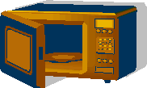
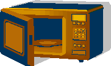
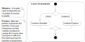

Généralisation/spécialisation

Hiérarchie des services d’autorisation


figure: F26.9, A32.9


Évitez de faire apparaître les éléments dérivés dans les diagrammes, sauf si leur omission peut nuire à la compréhension


Diagrammes de séquence

Diagrammes de communication


fig F14.16, A15.16


 No
te: Voir solution dans la section exercice plus bas.
No
te: Voir solution dans la section exercice plus bas.


ref: UML Distilled, 2nd ed., Fowler, Scott, Addison Wesley, 2000.

For example,
Réf: https://www.uml-diagrams.org/communication-diagrams.html

Réf: Documenting Software Architectures: Views and Beyond, 2e édition, Felix Bachmann, Len Bass, Paul C. Clements, David Garlan, James Ivers, Reed Little, Paulo Merson, Robert Nord, Judith A. Stafford

 

Transactions et objets métier apparentés

Objets qui changent de rôle, comme une personne…

Transitions peuvent avoir des actions et des conditions de guard





|Client|
start
:Commander plat;
|#lightgreen|Restaurant|
:Commande]
:Preparer plat;
|Livraison|
:Plat]
:Livrer Plat;
|Client|
:Payer;
stop